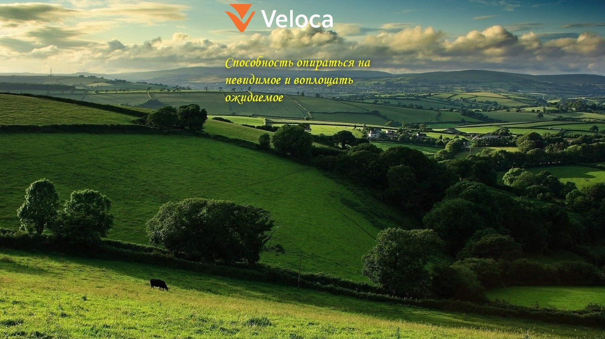

Kaggle Forum
Новые темы по машинному обучению с форума Kaggle.
Открыть канал →
Реальные проекты в области робототехники, авиации, машинного обучения и встроенных решений.
Сергей Тетерин Александрович, МАИ, Москва, Россия
MATLAB / Simulink · Python · C/C++

Новые темы по машинному обучению с форума Kaggle.
Открыть канал →Подборка тезисов из комментариев к новостям и мнениям.
Открыть канал →Подборка картин маслом, выставленных на продажу на eBay.
Открыть канал →Российские петиции об уголовных делах и собранная база данных.
Открыть канал →Оповещения о важных экономических событиях и историческая база данных.
Открыть канал →Художественные фотографии людей с татуировками.
Открыть канал →Инженерные материалы из блога MathWorks.
Открыть канал →15 марта 2025
Размышления о гонке в сфере ИИ, власти технологических компаний и вопросах контроля.
Читать статью →5 апреля 2025
Идея люденов у братьев Стругацких: эволюция человека, сверхразум и граница между ними.
Читать статью →Картины: холст, масло
Открыт к инженерному сотрудничеству, исследованиям и прикладным разработкам по следующим направлениям:
Для обсуждения инженерных проектов и автоматизации напишите мне.
Если хотите помочь развитию проектов или разместить рекламу — Bitcoin-кошелёк:16ATcBdaW29e3GNAf6WWT1GgEmGRpQV1a5